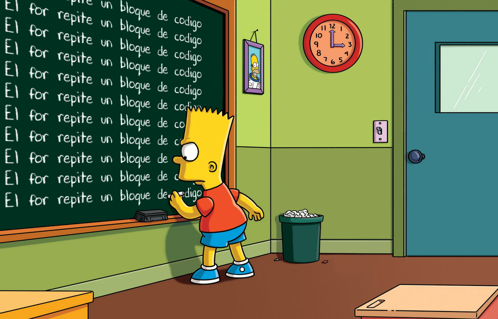

← Tornar a l'índex d'exercicis
Aquests qüestionaris avaluen el control del flux d'un programa: decisions amb if-else i switch, repeticions amb for, while i do-while, i interrupcions amb break i continue.
Determina la sortida del programa segons els camins d'execució presos.
Construeix el codi que determina si num és parell o senar:
Arrossega des d'ací (o clica dues línies per intercanviar-les):
Si val és 50, quina és la sortida d'aquest codi?
Selecciona l'exemple correcte de la sentència condicional
Selecciona la sortida del programa segons el valor de la variable a.
a = 0
a = -1
a = 1
Construeix el codi que recomana què has d'agafar per ixir de casa segons el temps que fa:
Arrossega des d'ací (o clica dues línies per intercanviar-les):
Què imprimeix el següent programa?
Calcula el nombre d'iteracions i el resultat del programa en executar bucles.
Selecciona tots els bucles que imprimeixen "LoOOops" exactament 10 vegades.
int i = 0i < 10i++{ println("Hola"); }Quins dels següents for fan exactament 100 iteracions?
Quins dels següents for imprimiran el número 100?
Què imprimeix el següent codi?
Comprova com s'interrompen o es continuen els bucles en trobar aquestes sentències.
Què imprimeix el següent codi?
Quants números imprimex el següent programa?
Classificador de nombres:
Llegeix un número enter i indica si és positiu, negatiu o zero, i si és parell o senar.
Major de tres números:
Llegeix tres números enters i mostra quin es el major. Si hi ha empat, indica-ho amb un missatge.
Precio de la entrada:
Un parc d'atracciones cobra segons l'edat:
Temps de pantalla:
La teua aplicació de benestar digital advertix a l'usuari segons les hores d'ús de pantalla diàries.
Variants
Crea una variant dels dos exercicis anteriors amb la temàtica que t'agrade. Exemples:
switch2if
Transforma el següent codi amb switch a un codi amb if-else:
if2switch
Transforma el següent codi amb if-else a un codi amb switch:
expressió / sentencia switch
Fes un programa equivalent, transformant la següent expressió switch a una sentència switch:
Accés a l'aplicació
Implementa en Java el següent diagrama, que decideix si un usuari pot accedir a una app.
Llegeix per teclat l'edat del jugador (int) i si el seu compte està verificat (boolean),
i imprimix el missatge corresponent.
flowchart TD
A([INICI]) --> B{"¿Edat >= 18?"}
B -- Sí --> C{"¿Compte verificat?"}
C -- Sí --> D["Acces concedit"]
C -- No --> E["Verifica el compte abans de continuar"]
B -- No --> F["Acces denegat: edat minima 18 anys"]
L'estructura del codi pot ser:
Accés al mode Clasificatoria
El següent diagrama mostra les condicions que ha de complir un jugador per accedir al mode Clasificatoria d'un videojoc.
Implementa el codi corresponent amb sentències if-else.
flowchart TD
A([INICI]) --> B{"¿Nivell >= 30?"}
B -- No --> C["Acces denegat:
puja de nivell"]
B -- Sí --> D{"¿Email verificat?"}
D -- No --> E["Acces denegat:
verifica el teu email"]
D -- Sí --> F{"¿Sancions actives?"}
F -- Sí --> G["Acces denegat:
compte sancionat"]
F -- No --> H["Acces concedit al
mode Clasificatoria"]
Qualitat de vídeo en streaming
Implementa el següent diagrama de flux, que decideix la qualitat de vídeo en streaming segons la velocitat de connexió i el tipus de pla del servei.
flowchart TD
A([INICI]) --> B{"¿Velocitat >= 25 Mbps?"}
B -- No --> C{"¿Velocitat >= 5 Mbps?"}
B -- Sí --> D{"¿Pla Premium?"}
C -- No --> E["Qualitat: 480p"]
C -- Sí --> F{"¿Pla Premium?"}
D -- Sí --> G["Qualitat: 4K"]
D -- No --> H["Qualitat: 1080p"]
F -- Sí --> I["Qualitat: 1080p"]
F -- No --> J["Qualitat: 720p"]
Reptes for

1_000_000 de vegades "Hola, món!"25 al 250_000"------------------------"25 al -25"Hola!" 10 vegades, numerant cada línia: 1. Hola!, 2. Hola!, ...0 al 100 de 10 en 10100 al 0 de 5 en 51 al 10, indicant el número: El quadrat de 1 es 1, El quadrat de 2 es 4, ...2 al 50, comptant de 2 en 21 al 517 des del 7 al 1006 x 1 = 6, 6 x 2 = 12, ..., 6 x 10 = 60